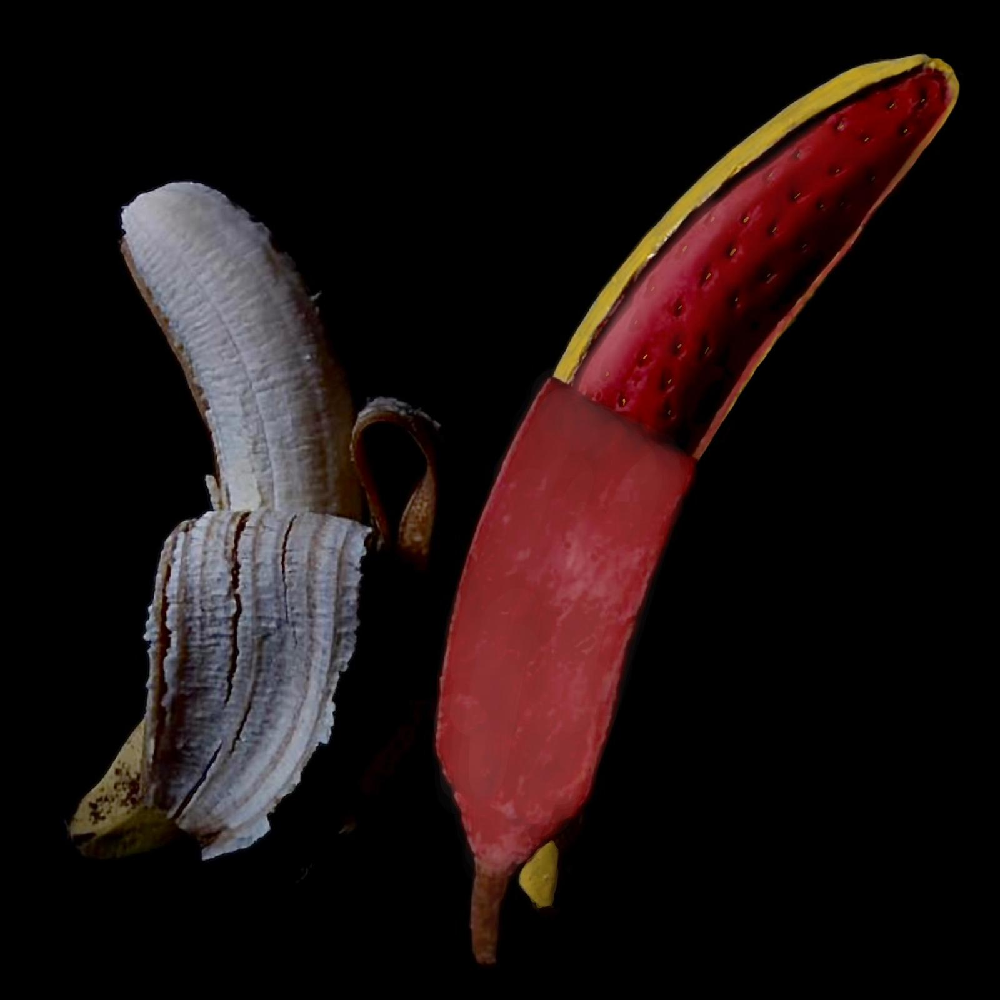

Au cœur de l'obscurité scientifique, ma récente infiltration dans un laboratoire clandestin a révélé des pratiques révolutionnaires, mais aussi inquiétantes, concernant la modification des fruits. Les scientifiques, à l’aide de bombes de peinture génétique, peignent les fruits artificiellement, redéfinissant ainsi notre perception visuelle de ces délices de mère nature.
Guidé par l'ombre, j'ai été témoin de chercheurs jouant de leur ingéniosité avec des pommes, des oranges et même une framboise. Ils transforment nos fruits avec une précision — il faut le reconnaître — digne d'un chef-d'œuvre artistique, créant des formes hybrides défiant les lois de la nature.
Ces nouveaux fruits soulèvent des questions fondamentales sur notre relation avec l'alimentation. Allons-nous oublier la forme originale des pommes, des fraises et des oranges ? Il ne faut pas non plus oublier les questions éthiques liées à la manipulation de la nature à des fins esthétiques et pratiques. Ne sommes-nous pas en train de perdre la connexion précieuse entre l'homme et la nature au nom de l'innovation génétique ? Les fruits, symboles de pureté organique, sont-ils en train de devenir simples objets modifiés, symbole d'une aventure scientifique brouillant les limites entre nature et création humaine ?
Voici la seule vidéo que j'ai pu prendre dans ce laboratoire ultra-surveillé. Il m'a été compliqué de me cacher afin d'avoir ces images et j'ai dû m'enfuir en courant, me faisant presque rattraper.
Mais nous pouvons voir un scientifique en train de peindre une pomme carrée, puis une orange, il avait peint cette grosse framboise juste avant.
La framboise, à l’origine de petite taille, fait désormais la taille de l’équivalent d’une cinquantaine de framboises empilées. Ainsi, le plaisir du consommateur est dupliqué. De plus, ce format rend son transport plus pratique.
La pomme, anciennement ronde, a été remodelée par les scientifiques en une forme plus carrée. Ainsi, elle ne roule pas, il devient donc plus simple de les empiler ou de les ranger dans un sac pour le transport. Sa couleur d’un rouge vif et monochrome la rend davantage plus attractive en augmentant son esthétisme.
Il y a par ailleurs un premier fruit hybride entre une orange et un kiwi. La peau du kiwi étant poilue à l’origine, cette dernière répugnait les consommateurs. Afin de remédier à cela, les scientifiques ont décidé de constituer un nouveau fruit dont la peau est celle d’une orange et la chair celle d’un kiwi. Ainsi, la peau, d’une orange vive et brillante, véhicule chez le consommateur un sentiment de gaité qui pousse à consommer le fruit. De plus, nous avons encore une dimension pratique : la peau de l'orange est bien plus facile à éplucher, son transport et sa praticité sont augmentés.

Et puis, un deuxième fruit hybride, entre une banane et une fraise. La peau de la banane a, ici, été choisie pour son côté utile afin de mieux conserver la chair de celle-ci. À l’intérieur de ce fruit, se trouve une fraise, qui prend normalement une forme plus compacte ; désormais, elle est allongée dans le but de faciliter son transport afin que sa consommation. La fraise étant tachante à l’origine, ici, elle est protégée par la peau de la banane. Rien de mieux que la praticité de cette banane fraise si vous souhaitez une collation « saine ».
La nourriture artificielle créée en usine a toujours soulevé des questionnements quant à la qualité sanitaire de nos aliments. Tout est transformé, tout est plastifié. Et si les fruits avaient l’avantage de nous ramener à une alimentation saine, ils font aujourd’hui également l’objet de cette industrie alimentaire, confondant à la fois naturel et artificiel. En effet, modifiés en fonction de leur qualité pratique, de banane-fraise à kiwi-orange, ces fruits industriels interrogent alors sur les limites du perfectible : la nature est-elle améliorable ?